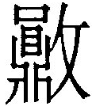
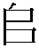

損卦 山澤損
損，有孚，元吉，无咎。可貞，利有攸往。曷之用，二簋可用享。初九，已事遄往，无咎，酌損之。九二，利貞，征凶。弗損，益之。六三，三人行，則損一人，一人行，則得其友。六四，損其疾，使遄有喜，无咎。六五，或益之十朋之龜，弗克違，元吉。上九，弗損，益之，无咎，貞吉，利有攸往，得臣无家。
【卦名】
今本：損 帛書：損 秦簡：損 歸藏：員 清華簡： 海昏：損
《說文》：「損，減也。」水部又說：「減，損也。」損與減互訓。損即減少、損失的意思。
馬國翰輯本《歸藏》損作「員」，益作「諴」。古文的員即圓的本字，諴字《說文》：「和也。」或許這兩卦代表的一個是圓融，一個是和協。不過從王家台秦簡也作損來看，《歸藏》的「員」應視為損字的簡寫。古字多有如此簡省者，如師字古文或省為，或省為帀。而損字在戰國楚簡中也會簡寫為員，例如，今本《老子》的「為道日損」《郭店楚簡．老子乙》簡三就作「為道者日員」。
清華簡作，也是損的異體字。事實上在甲骨文及金文中，員下的貝從鼎，貝是鼎的簡化。這有些像「貞」字，原本作「卜鼎」，後簡化為「卜貝」一樣。而攵字邊為手持棍棒示擊打之義，擊打似乎表示損壞，而非減損。
【卦義】
損失，減少，精省。損有餘、戒除缺點、去除欲望，犧牲短利。
《序卦傳》：「緩必有所失，故受之以損。」損的原意為減少的意思，《序卦傳》說的「有所失」。因為有所失，所以《繫辭傳》說：「損，先難而後易。」
損與益是相反而相成的一對卦，《雜卦傳》：「損益，盛衰之始也。」《繫辭》：「損，德之脩也。益，德之裕也。」「損以遠害，益以興利。」可見《易經》中把損與益當做是修德的兩種不同功夫與方法，也是相輔相成的一對觀念。損是減少，益是增加。損是戒除欲望，益是努力用功。損是要損有餘，去除多餘的，不好的。益是要補不足，就是增加自己的優點或能力。損是損下益上，犧牲小我完成大我，益則是損上益下，犧牲大我以補救小我。投資上損是停損，消極退守，益則是加碼，積極進攻。戰略上，損是斷尾求生，益是乘勝追擊。
老子說：「為學日益，為道日損。」依老子看法，損是一種修道功夫，「損之又損，以至於無」，把人生中所有不需要的東西全都捨棄了，最後剩下什麼，那就是道。而益則是學習的功夫，不斷的增加自己所缺乏的，豐富自己的學識內涵。
就《周易》的卦義來看，損有簡省之義。卦辭在講簡省之道，即使在重隆盛的祭祀場合也有它的時機，如春夏之禴祭。但簡省的祭祀當要有誠心，所謂去飾以存其誠。
鄭玄說：「艮為山，兌為澤。互體坤，坤為地。山在地上，澤在地下，澤以自損增山之高也。猶諸侯損其國之富以貢獻於天子，故謂之損矣。」
《彖傳》以「損下益上」卦象解釋損卦卦象，陳夢雷並整理出四種說法：山體高，澤體深，下深而上益高，一也。澤在山下，其氣上通，潤及草木，二也。下為兌說，三爻皆上應，說以奉上，三也。損下乾剛而益柔，益上坤柔而成剛，四也。
鄭玄的解釋也是陳夢雷的第一說，山體在上，澤水在下，中間坤土，下兌澤自損以增益上艮山之高。該說法最多易學家支持。第二說和第三說都是源自程頤，其中第二說可能根據《說卦傳》「天地定位，山澤通氣」，然而澤水動而下（睽卦彖傳），如何與上卦艮山通氣？真正山澤通氣之卦，應該是咸卦，因為澤在上，動而下與艮山相應，這也是咸卦《彖傳》說的「二氣感應以相與」。第三說當以第二說的卦象為基礎，因此此說又不通。
這些說法以第四說最佳，因為益卦《彖傳》說是「損上益下」，對比之下，前三種說法於益卦都不通，只有第四說解釋損益兩卦皆通。這是以卦變及陰陽升降來說明損益兩卦，損卦是從泰卦而來，泰卦下乾犧牲九三陽爻，與上坤的上六陰爻交換，就成為損，所以說損下益上。反之，益卦是否卦來，否卦上乾九四下行之初，補下坤之虛，因此為損上益下。泰九三和否九四，於三才都是人爻。
「損下益上」引申到處世上就是臣下貢獻於君王，下屬奉獻於上司。犧牲小我，完成大我。此亦可理解為損近益遠，犧牲眼前短利，成就長遠利益，所謂的先難後易。
損又有戒欲的意思。就上下卦的卦象來看，損卦內兌悅而外艮止，內心喜悅，外在行為知所節制而有所不為，是動乎情，止乎禮之象。又少男在上，少女在下，男女山澤二氣未交，艮之上六及兌之六三皆不當位，男女無以結合，山澤未能通氣之象。所以《象》曰：「山下有澤，損，君子以懲忿窒欲。」要人戒慾的意思。
陳夢雷論損卦六爻：「全彖以損所當損則得，而要之于時。六爻則下三爻皆知損者，上三爻皆損中受益者。蓋損者聖人不得已而用之，唯合于時則得。若不宜損而損，則所損又不待言矣。」下卦要義在於「知損」，而上卦則在闡明「損中受益」。此又是以「損下益上」來論斷六爻，下三爻為「知損」，即損下；上三爻為「損中受益」，即益上。
程頤以損有三義來論六爻：「四五二爻，取損己從人。下體三爻，取自損以益人。損時之用，行損道以損天下之當損者也。上九則取不行其損為義。」
【孔子論損益】
帛書《要》有一段孔子對於損益兩卦的深入論述：
孔子繇易，至於損益二卦，未尚不廢書而歎，戒門弟子曰：二品子！夫損益之道，不可不審察也，吉凶之門也。益之為卦也，春以授夏之時也，萬勿之所出也，長日之所至也，產之室也，故曰：益，授者。秋以授冬之時也，萬勿之所老衰也，長夜之所至也，故曰產道窮焉，而產道□焉。益之始也吉，其冬也凶。損之始凶，其冬也吉。損益之道，足以觀天地之變，而君者之事已。
是以察於損益之變者，不可動以憂憙。故明君不時不宿，不日不月，不卜不筮，而知吉與凶，順於天地之心，此胃易道。……損益之道，足以觀得失矣。
孔子為《周易》寫卦爻辭，到損益二卦時，一定會放下書而感嘆，告誡門人弟子說：二三子！損益之道，一定要好好審察，這是吉凶之門。談到益這一卦，春天時授予夏時，這也是萬物出來的時候，也是到「長日」的時候（即白天比晚上還要長），是生產的時候。所以說：益是授予。而秋天的時候則是授予冬時，萬物在這時後衰老，也是到「長夜」的時候，所以說生產之道已經窮困。益開始是吉的，而最後是凶的。損則是開始是凶的，最後是吉的。損益之道，足以觀察天地之間的變化，這也是為君者的事情。
因此，能夠明察損益變化的人，不用觀察時間星宿等天象，也不用推算日月等曆法，更不用卜筮通鬼神，就能夠明白吉凶，順於天地之心，這就是所謂的易道。……損益的道理，足以觀察得失。
《雜卦傳》：「損，先難而後易。益，長裕而不設。」孔子論述則是以損卦先凶後吉，益卦為先吉後凶。
【子夏問損益】
《說苑》記載一段子夏問孔子損益的故事，可能與以上帛書所談論的是同一件事，在漢初時應該是漢儒經常傳述的同一典故：
孔子讀易至於損益，則喟然而歎，子夏避席而問曰：「夫子何為歎？」孔子曰：「夫自損者益，自益者缺，吾是以歎也。」子夏曰：「然則學者不可以益乎？」孔子曰：「否，天之道，成者未嘗得久也。夫學者以虛受之，故曰得；苟不知持滿，則天下之善言不得入其耳矣。昔堯履天子之位，猶允恭以持之，虛靜以待下，故百載以逾盛，迄今而益章。昆吾自臧而滿，意窮高而不衰，故當時而虧敗，迄今而逾惡，是非損益之徵與？吾故曰：謙也者，致恭以存其位者也。夫豐，明而動故能大，苟大則虧矣。吾戒之。故曰：天下之善言不得入其耳矣。日中則昃，月盈則食，天地盈虛，與時消息；是以聖人不敢當盛。升輿而遇三人則下，二人則軾，調其盈虛，故能長久也。」子夏曰：「 善，請終身誦之。」
孔子讀易，讀到損益就會深深嘆息，子夏離開座位起身問孔子說：「夫子為何歎息？」
孔子說：「自損的人得益，自益的人則缺損。所以我感歎。」
子夏問說：「難道說學習中的人就不可以自益嗎？」
孔子說：「不行。天道是這樣的，成功的從來都不會長久。學習的人，因為虛心才能夠接受，所以才能得。若是不懂得如何持滿（持盈），那麼天下的善言就聽不進去。以前堯坐上天子之位時，仍然虔誠恭敬地持有這個位置，虛靜對待下面的人，因此百年之後名聲更盛，到今天還日久彌新。反觀昆吾，自我誇善而自滿，意氣風發以至於窮極至高而毫無衰敗的跡象，但他在當時就因此而虧損而敗壞了，到了今天還臭名滿天下，這難道不就是損益的徵兆嗎？
所以我說：所謂的謙虛，就是致恭而保有位置的人。像豐卦，因為明而動所以才說它是盛大，但就因為大，所以因此而虧損了。我深自警誡，因為豐大所以天下的善言都聽不進去了。日正當中之後就是太陽偏西準備日落，月亮圓了就會有月蝕，這都是跟著時間在消息變化的。所以，聖人不敢處於盛大。要登上大車時，如果遇到三個人，那麼就下車。若是兩個人，就握好車前的橫桿，調整車子空間的盈虛，因此才走得久。
子夏說：善哉，我要終身銘記在心。
【孔子說欹器】
《說苑》另有一段故事，講孔子在周廟見「欹器」，藉以向弟子講論「滿則覆」的抑損之道：
孔子觀於周廟而有欹器焉，孔子問守廟者曰：「此為何器？」對曰：「蓋為右坐之器。」孔子曰：「吾聞右坐之器，滿則覆，虛則欹，中則正，有之乎？」對曰：「然。」孔子使子路取水而試之，滿則覆，中則正，虛則欹，孔子喟然嘆曰：「嗚呼！惡有滿而不覆者哉！」子路曰：「敢問持滿有道乎？」孔子曰：「持滿之道，挹而損之。」子路曰：「損之有道乎？」孔子曰：「高而能下，滿而能虛，富而能儉，貴而能卑，智而能愚，勇而能怯，辯而能訥，博而能淺，明而能闇；是謂損而不極，能行此道，唯至德者及之。易曰：『不損而益之，故損；自損而終，故益。』」
這段典故，在《荀子‧宥坐篇》以及《韓詩外傳》中也有記載，但有些細節略微不同。例如，《荀子》中周廟變為魯桓公之廟，「右坐之器」則做「宥坐之器」，宥通右。
話說孔子到周的宗廟裡時，見到了「欹器」（欹音七），就問守廟的人說，這是什麼器具？守廟人說：「這是右坐之器。」因位該器放在座位右邊，因此得名。
孔子說：「我聽說，右坐之器這東西，注滿了水它就會翻覆。但若是空虛無水時就傾斜，水注到正中間的時後它就立得正直。有這一回事嗎？」（滿則覆，虛則欹，中則正。）
守廟人回答說：「是的。」
於是孔子請子路取水試試看，果如所言。孔子深深歎口氣之後說：「那有滿而不覆的道理。」
子路說：「那麼是否有什麼持滿之道呢？」
孔子說：「持滿之道，就是挹而損之。」
「持滿」即「持盈保泰」的「持盈」，盈即滿。所謂的「持滿」有兩種可能的解釋。一、這只是一種相對的「滿」，而不是真滿。因為既然滿則覆，那麼真的滿當然無法維持的。所以真正的持滿，就只有不要讓他滿，而要懂得自我減損，別讓它真的滿。所以孔子說：「挹而損之」。「挹而損之」《韓詩外傳》作「抑而損之」，文義更易理解。其實就是減損的道理，並不是真的把水注到滿的特殊技巧。
第二種可能的解釋，就是能夠像欹器一樣，在滿時就將自己翻覆清空，如此水才能夠繼續倒滿。從後文「高而能下，滿而能虛」看來有些是這個意思。這層意思更重視消息盈虛的道理，損益成為相互循環的一體兩面，而不是孤立而對立的。所謂的持滿，只是與時消息，而不是期望能夠停留在一個滿的狀態。
子路再次追問「損之道」，孔子回答說：「高而能下，滿而能虛，富而能儉，貴而能卑，智而能愚，勇而能怯，辯而能訥，博而能淺，明而能闇；是謂損而不極。」並引述《易》曰：「不損而益之，故損；自損而終，故益。」不知出自《周易》那一段。有些像九二和上九的「弗損，益之」，可是義理內容又不像。
最後這一段的回答，《韓詩外傳》中孔子講得更深刻：
德行寬裕者，守之以恭。土地廣大者，守之以儉。祿位尊盛者，守之以卑。人眾兵強者，守之以畏。聰明睿智者，守之以愚。博聞強記者，守之以淺。夫是之謂抑而損之。《詩》曰：「湯降不遲，聖敬日躋。」
「欹器」的原始功能究竟是什麼，已不得其考，但這種器物的發明應該早在史前時代就有。最早的可能功用可能與汲水有關，或者是灌溉之用，但由於其奇妙的功能，而在春秋時讓國君放在右坐，作為實體的「座右銘」，警惕自己。據說，後來的「座右銘」就是從作為「右坐之器」的「欹器」發展而來。
以下有請孔鏘老師幫大家示範說明「欹器」的作用原理：（按：孔老師字幕把「欹器」打成「漆器」，「右（宥）坐之器」打成「釉做之器」了。）
損，有孚，元吉，无咎，可貞，利有攸往。曷之用，二簋可用享。
《彖》曰：損，損下益上，其道上行，損而有孚，元吉。无咎，可貞，利有攸往，曷之用，二簋可用享，二簋應有時，損剛益柔有時，損益盈虛，與時偕行。
《象》曰：山下有澤，損，君子以懲忿窒欲。
減損，有誠信，元吉則可沒有罪咎，而可以貞定，利有所往。要用什麼來供奉祭祀？簡單兩個盤子的黍稷雜糧就可。
損即精省、精簡之道，若用在祭祀，則貴在虔誠。
整段的吉凶判斷為「利有攸往」，但條件相當的多，簡單來說則是「有孚」兩字。此言虔誠之重要，虔誠可得元吉，而無咎，而可貞，最終才得利有攸往。
最後談到「損，有孚」如何用在祭祀上。損之為道，重在誠心，簡單兩盤的黍稷做為供奉就可。程頤以「損飾以存誠」解釋，最得其義。
《彖傳》則強調「時」，減損用在祭祀當有時，時機不對，亦不宜減損。
孔穎達：損者，減損之名，此卦明損下益上，故謂之損。損之為義，損下益上，損剛益柔。損下益上，非補不足者也。損剛益柔，非長君子之道者也。若不以誠信，則涉諂諛而有過咎，故必有孚，然後大吉，无咎可正，而利有攸往矣。……今行損用信，則是无過可正，故云「无咎可貞」。
程頤：聖人以寧儉為禮之本，故為損發明其義。以享祀言之，享祀之禮，其文最繁，然以誠敬為本，多儀備物，所以將飾其誠敬之心，飾過其誠，則為偽矣。損飾所以存誠也，故云「曷之用，二簋可用享」。二簋之約，可用享祭，言在乎誠而已，誠為本也。
【字義】
无咎可貞：有兩種讀法，一般易學家讀作「无咎，可貞」，依孔穎達疏，當讀作「无咎可貞」，無咎可正的意思，即沒有任何罪咎可以糾正。《周易正義》：「先儒皆以无咎、可貞，各自為義，言既吉而无咎，則可以為正。准下王注《彖》辭云：『損下而不為邪，益上而不為諂，則何咎而可正。』然則王意以无咎可貞共成一義。」「可貞」在《周易》中出現的還有坤六三「含章可貞」，无妄九四「可貞，无咎」。另有「不可貞」的用法，蠱九二「幹母之蠱，不可貞」，節卦「苦節不可貞」，另明夷九三「明夷于南狩，得其大首，不可疾貞」。《周禮》：「凡國之大事，先簭而後卜。」可貞、不可貞，或許是先以《周易》問筮，如果可以繼續問卜，則曰「可貞」；若不可繼續問卜，就說「不可貞」。貞者，卜問也。
曷之用：何之用？要用什麼？曷，音義同「何」。這裡問說祭祀要用什麼。後文回答說：「二簋可用享。」意思是簡簡單單兩簋就可享祀。
二簋可用享：二簋就可供奉祭祀。簋，音「鬼」，祭祀中專門盛黍稷等食物的器具，以偶數為用，因此最少就是二。《說文》：「黍稷方器也。从竹从皿从皀。㔳，古文簋从匚飢。匭，古文簋或从軌。」享，供奉祭品，祭祀。祭祀可繁可簡，二簋是最精簡者。繁者可能四簋或更多。因損下益上之道以誠心、內心誠悅最為重要。處損之時，以簡單、精省為宜，故二簋即可用享，不用太多。簋，蜀才作軌。坎卦六四：「樽酒簋貳用缶。」
懲忿窒欲：戒止忿怒之心，阻塞情欲。懲，戒止。《經典釋文》引作「徵」：「鄭云：猶清也。劉作懲，云清也。蜀才作澄。」窒，《經典釋文》：「鄭劉作懫，懫止也。孟作侄。」依鄭玄與蜀才，懲通澄，清的意思，懲忿窒欲為清心寡欲的意思。上艮有戒止、阻塞之義，為懲為窒，下兌為情欲。
初九，已事遄往，无咎，酌損之。
《象》曰：已事遄往，尚合志也。
祭祀之事要快速前往，沒有罪咎。倒的酒可以減少一些。
快速前往言參與祭祀的誠心。酌損之承上爻，祭祀重誠，有誠則精簡、減損無妨。
另一解釋為，有事而快速前往，沒有罪咎。斟酌減損，不需減損太多。
【字義】
已事遄往：「已」字有多種解釋。一是音「以」，意思為「已經」的已，停止之意，「已事」即停止、結束，或放下手上的事。傳統易學家多採用此解，如《正義》：「竟事速往，乃得无咎。」《本義》：「輟所為之事而速往以益之，无咎之道也。」程頤亦採取義，但將「往」解釋為離去，以「功成不居」解釋全句：「所益於上者，事既已則速去之，不居其功，乃无咎也。」另一解為「己」，自己的己，「己事」亦即與自己切身相關的事。該註解較少有易學家採用。來知德：「己者我也，本卦損剛益柔，損下益上，乃我之事也。」三是作「巳」。李鼎祚《周易集解》作「祀事」，即祭祀之事。虞翻：「祀，舊作巳也。」四是《說文》引作「㠯」，通以。已部：「㠯，用也，从反已。」段注：「已主乎止，㠯主乎行，故形相反。二字古有通用者。」㠯即以字的古文，許慎解釋為「用」。遄，音「船」，有二義。一是疾速，快速。遄往，快速前往。虞翻、王弼皆以遄為速，歷代易學家也多採此說。二是往來頻繁。《說文》辵部：「遄，往來數也，从辵耑聲。《易》曰：㠯事遄往。」「以事遄往」，依《說文》，應解釋為因為事情而頻頻前往。《爾雅》：「遄，速，亟，屢，數，迅，疾也。」
酌損之：酌為盛酒或取酒的意思，或者相對於清酒的濁酒，虞翻解釋為「取」。酌損之，言祭祀用的酒可以減少。此承上「二簋可用享」，因處損之時，一切節約從簡即可。宋明以後，將酌解釋為斟酌、酌度。酌損之，斟酌情況減損一些，減損不需過於積極或過度。
尚合志也：尚有二義，一通上下的上，多數易學家採用此說。上合志，初九與六四相應，四在上卦，故曰上合志。二是庶幾，表達期望，期望能夠與六四合志。孔穎達採此義。
九二，利貞，征凶。弗損，益之。
《象》曰：九二利貞，中以為志也。
利於堅定，出征為凶。不需減損，反應當增益。
宜於守住既有，不宜出征或進取。若能安於目前狀似平平的情勢，未必會不利。但如果貿然前往，反而會帶來災難。以靜制動則小吉，出征則凶。損卦原為損下益上的意思，但九二居中，是有中庸之德者，雖與六五相應，但不宜減損自己而迎合在上者，反應堅持及強化自己的中庸美德。
或曰：九二之益之，即益六五，因此六五曰「或益之十朋之龜」。
【字義】
弗損益之：有兩種讀法，一是作「弗損益之」，不損也不益。二是「弗損，益之」。該讀法又有兩種解釋，一是損非其時，不當損，而當益。王弼：「二不損而務益，以中為志也。 」二是不損下才是益上，世儒多採此說，如程頤：「不自損其剛貞，則能益其上，乃益之也。」朱熹：「言不變其所守，乃所以益上也。」
六三，三人行，則損一人。一人行，則得其友。
《象》曰：一人行，三則疑也。
《繫辭》：天地絪縕，萬物化醇。男女構精，萬物化生。易曰：「三人行，則損一人，一人行，則得其友。」言致一也。
《說苑》：升輿而遇三人則下，二人則軾，調其盈虛，故能長久也。
三人同行，則減少一人。若是一人獨自前往，則可得到朋友。
此言事情應該以兩人偶對為宜，不宜成群；若是一人，則當有另一人為配偶。引申又有專心一意，不宜一心多用的意思。
孔子在《繫辭》解釋這段說「言致一也」。又《象》曰：「一人行，三則疑也。」言一人則可行，若要三人或多人同行則相互猜疑，因此要有所減損。一人獨自前往反而會得到朋友，這也是孔子說的「致一」，專一的意思。
《說苑‧敬慎》孔子與子夏論損益：「升輿而遇三人則下，二人則軾，調其盈虛，故能長久也。」此爻講的似乎是古代乘車的規則。乘車理當兩人才能保持車輿的平衡，車子才能行得長久。如果三人就要減損一人；若是一人出行，則要增加一人。
《繫辭》以「天地絪縕，萬物化醇。男女構精，萬物化生」解釋。此段大意為：天地交合而蘊釀生機，萬物因此變化得更醇厚。男女（牝牡）交媾而受精，萬物因此變化出生命。天地之間，男女、牝牡的交媾受精，都是兩兩成偶。就如自然界，兩雄爭一雌，必損一雄。
王弼注亦取《繫辭》這段話：「天地相應，乃得化淳；男女匹配，乃得化生。」
【字義】
三人行、一人行：王弼以六三至六五三陰為三人行，六三與上九相應為一人行。三陰並行，則上九疑於六三，因此損一人；六三若獨行，則可與上九相應，則得其友。虞翻以卦變解釋，三人為泰卦下三爻，一人行為泰九三上行至上成損之上六。朱震亦採用這個取象。按：就卦象來說，以卦變解說最佳。六三原為泰卦九三，互體為震，震為行。泰卦九三陽行至上變為損卦，此為三人行則損一人。損上九原為泰九三，至上之後，與六五比應為對，六五因此十朋之龜之益，此為一人行則得其友。
天地絪縕，萬物化醇：絪縕，言天地之間陰陽的交合而蘊釀萬物，程頤解釋為「交密」。醇原本意指酒水很純，不掺水，引申為濃厚。化醇，形容萬物生命至精至純。
男女構精，萬物化生：構通媾，交媾、交配。精，受精。此言男女的生育之道。
六四，損其疾，使遄有喜，无咎。
《象》曰：損其疾，亦可喜也。
去除其疾病，快速則有喜，沒有罪咎。
四原本是多懼的爻位，其德性又柔弱，但六四當位，有初九相應，因此得吉。
初九言「巳事遄往」，六四言「使遄有喜」，因兩爻與應，初九遄往可損六四之疾。
【字義】
損其疾：疾有二義，一是疾病，二是急速。傳統皆取第一義，但有不同的引申。如孔穎達以疾為相思病：「疾者相思之疾也。」程頤取三義，以疾為疾病，又說是「不善」，又引申為過錯：「疾謂疾病，不善也。損於不善，唯使之遄速，則有喜而无咎。人之損過，唯患不速，速則不至於深過，為可喜也。」疾又可由疾病引申為心病、疑心病，即六三《象傳》「三則疑」的「疑」。有疑則當速速損之，乃得無咎。
使遄有喜：迅速去除其毛病則有喜。遄，速也。喜，或可解釋為病癒。无妄九五「无妄之疾，勿藥有喜」，兌九四「介疾有喜」。疾皆與喜對，可證喜為病癒。
六五，或益之十朋之龜，弗克違，元吉。
《象》曰：六五元吉，自上祐也。
有人拿著價值十朋貝的烏龜來幫助，無法違背，大吉。
龜在古時為神聖的決疑寶物，從選龜到如何處理、儲藏，都有嚴格的規矩。因此龜的幫助類似於我們在說「神明」保祐。
根據饒宗頤說法，卜辭中有「益龜」一語，並引損卦及益卦爻辭說：「殷周行卜，每用多龜，增益卜龜之數，故曰益龜。」（《殷代貞卜人物通考》第三六頁）那麼損益兩卦可能講的都是古代在龜卜的過程，「或益之十朋之龜」可能是占卜時有人增益了一隻「十朋之龜」來讓占卜結果更為神準而讓人不可違逆。
六五爻變之後卦成中孚，中孚為大離之象，離為龜，因此為十朋之大寶龜。益卦六二也同樣說「或益之十朋之龜」，因益卦六二爻變同樣成為中孚。互體坤，坤為眾為朋為十，故曰「十朋」。
【字義】
十朋之龜：朋原本為古代串貝或玉做為貨幣的單位，根據王國維說法，一朋兩串，一串五枚，所以一朋就有十枚。十朋相當於二十串或百枚貝。十朋之龜為價值十朋貝，或一百枚貝的龜，喻指價值不斐。但一朋有多少貝，自古說法紛歧。唐‧崔憬以雙貝為朋：「價值二十大貝，龜之最神貴者，以決之，不能違其益之義。故獲元吉。雙貝曰朋也。」鄭玄以五貝為一朋，《詩經》「既見君子，錫我百朋」鄭箋：「古者貨貝，五貝為朋。」另一解釋以朋為計量單位，十朋之龜為一百枚的龜。但朱熹採「雙貝為朋」之說，而以一朋為二龜：「兩龜為朋，十朋之龜，大寶也。」漢易以朋為類，十朋即十類之龜，如馬融、鄭康成：「十朋之龜者一曰神龜，二曰靈龜，三曰攝龜，四曰寶龜，五曰文龜，六曰筮龜，七曰山龜，八曰澤龜，九曰水龜，十曰火龜。」虞翻：「坤數十，兌為朋，三上失位，三動離為龜。十謂神、靈、攝、寶、文、筮、山、澤、水、火之龜也，故十朋之龜。」此十龜之說，出自《爾雅》。王弼以朋為朋黨，「或益之十朋之龜」為同時受到朋友以及靈龜的幫助，此說完全曲解文義：「朋，黨也。龜者，決疑之物也。陰非先唱，柔非自任，尊以自居，損以守之。故人用其力，事竭其功，知者慮能，明者慮策，弗能違也，則眾才之用盡矣。獲益而得十朋之龜，足以盡天人之助也。 」
上九，弗損，益之，无咎，貞吉。利有攸往，得臣无家。
《象》曰：弗損益之，大得志也。
不要減損，應當增益。沒有罪咎，貞定則吉。利有所往，得到無私的大臣。
上九為損卦結束將變為益卦的時候，已不需再減損，故曰「弗損」。又損卦為「損下益上」，上九同時有六五相承以及六三相應，皆為下益上，因此曰「益之」，曰「得臣」。
上九乃泰卦九三而來，泰九三上行之後原位成損六三，六三曰「一人行則得其友」，六三之「得友」呼應了上九的「得臣」。
得臣无家：得臣，得到大臣，得到輔佐之人。無家，有二說，一是形容所得之臣為因公忘私之人，有公事，無家事。二是形容為君者，既得臣，又能大公無私。傳統易學家多採此說。鐘鼎銘文中或以「家」為臣之單位，臣乃古代之奴隸。得臣無家，言所得之臣，不成其家，則不成一完整單位，有所缺損，因此不當減損，而當增益，以成其家。如〈不其簋〉銘文：「錫汝弓一，矢束；臣五家，田十田，用從乃事。」〈夨令簋〉銘文說賞「貝十朋，臣十家，鬲百人」。
【彖傳注】
損，損下益上，其道上行。損而有孚，元吉。无咎，可貞，利有攸往，曷之用，二簋可用享，二簋應有時，損剛益柔有時，損益盈虛，與時偕行。
損下益上，其道上行：以卦變解釋損卦。損卦是從泰卦而來，泰卦九三至上，上六至三，損下卦乾之實，益上卦坤之虛，所以曰「損下益上，其道上行」。先儒以上艮山、下兌澤之卦象解釋「損上益下」，如鄭玄：「艮為山，兌為澤。互體坤，坤為地。山在地上，澤在地下，澤以自損增山之高也。」後儒多採此說。但對應於益卦講「損上益下」，上下二體卦象就無法解釋。此當以卦變來解釋，才符合《彖傳》之義。損卦為損下卦乾之陽，以益上卦坤之陰。益卦則損上卦之乾，以益下卦之坤。
二簋應有時：祭祀要簡約，有其時機。損卦為應當簡約、簡樸之時，因此經文說「二簋可用享」，此進一步解釋二簋可用享。簋為祭祀時盛裝黍稷以敬鬼神的盤子，以偶為用，因此二是最為精簡的排場，二簋即極簡的祭祀。孔穎達：「二簋至約，可用享祭矣。」「申明二簋之禮，不可為常。二簋至約，惟在損時應時行之，非時不可也。」虞翻：「時謂春秋也。損二之五，震二月，益正月，春也。損七月，兌八月，秋也。謂春秋祭祀，以時思之。艮為時，震為應，故應有時也。」
損剛益柔有時，損益盈虛：損乾剛以益坤柔，乾為天，坤為地，損益乃天地盈虛之道，與時而行。此處兼益而言，非專指損卦。世儒以損卦為「損剛益柔」，並不正確。損益兩卦都是損剛益柔，後文「損益盈虛」亦可為證。